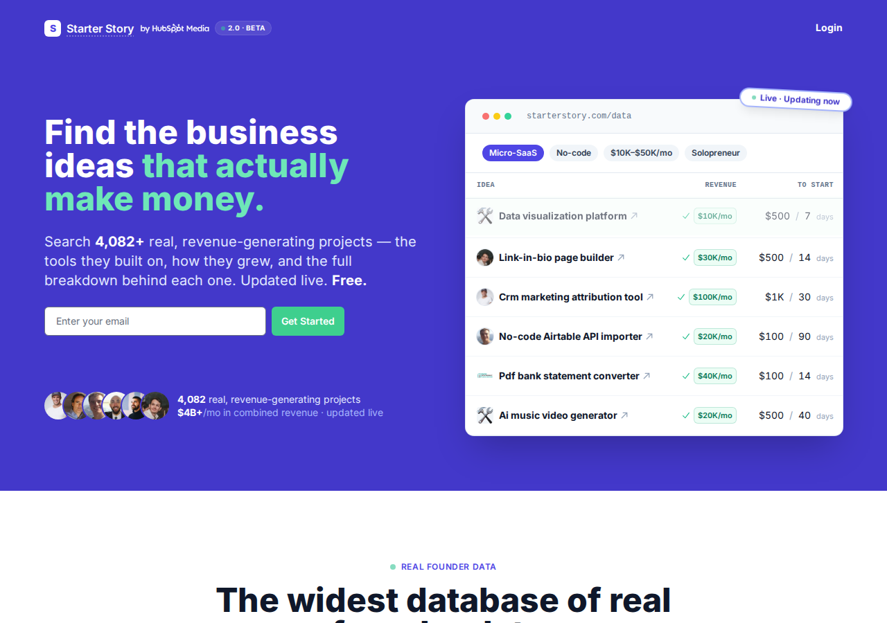
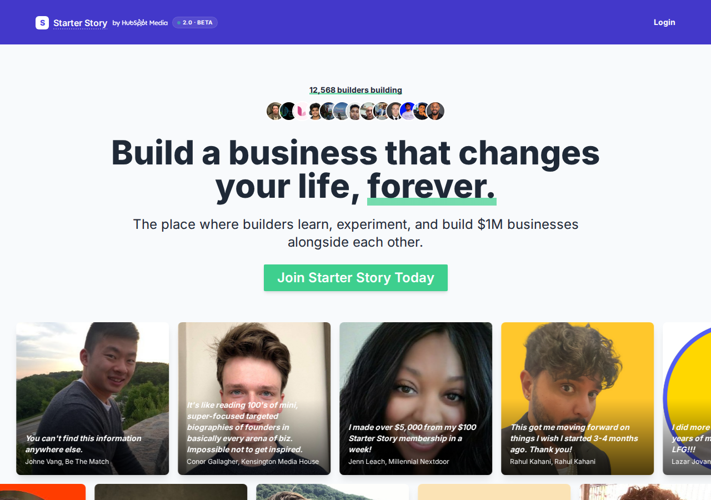
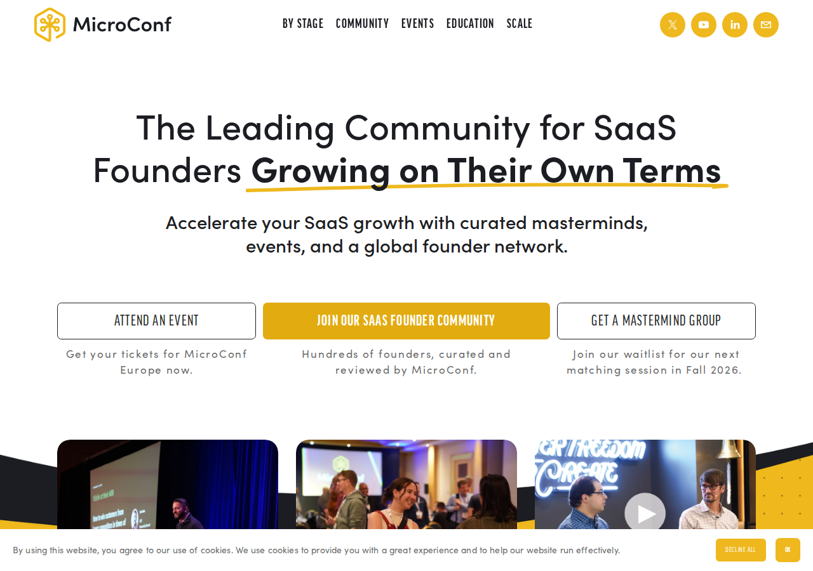
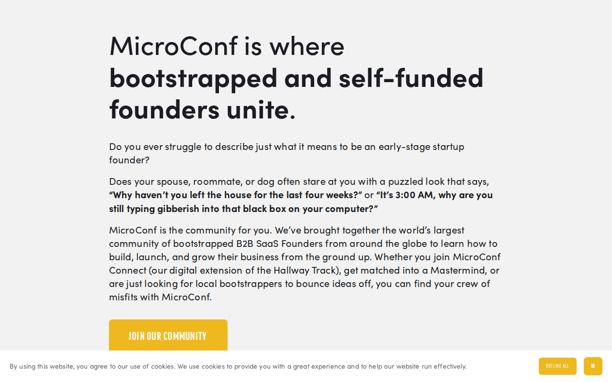
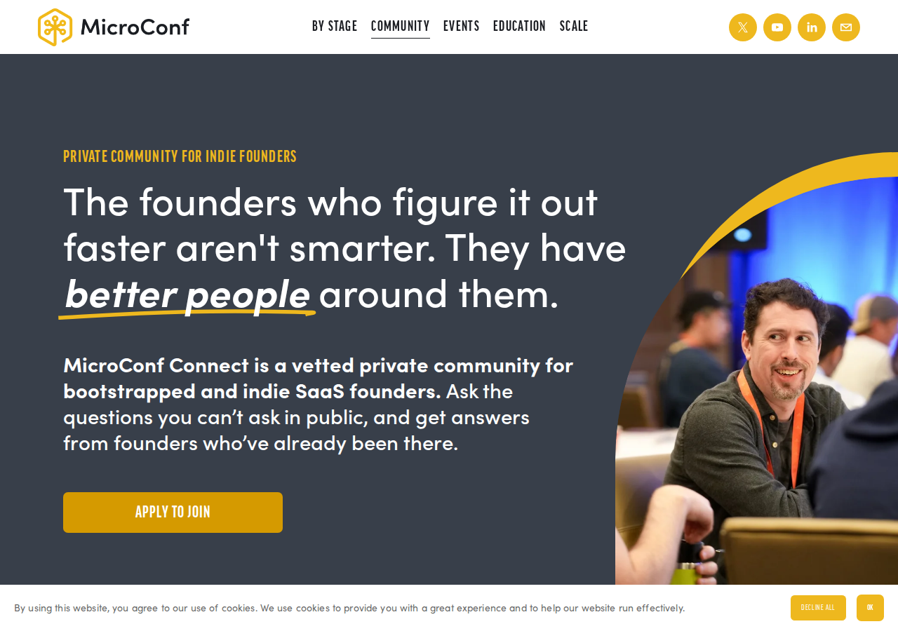
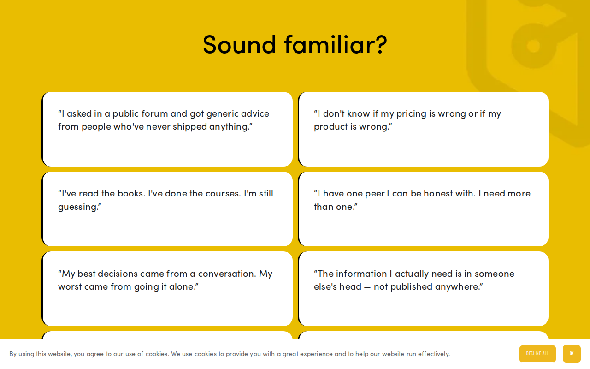
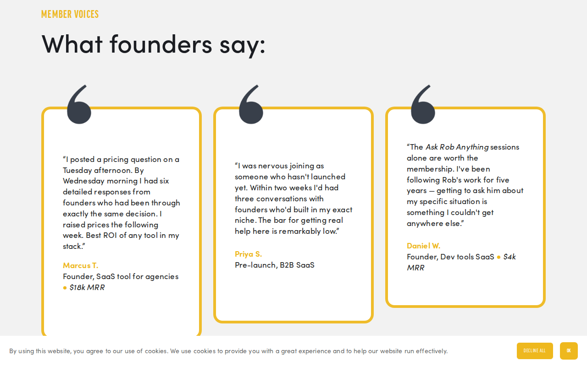
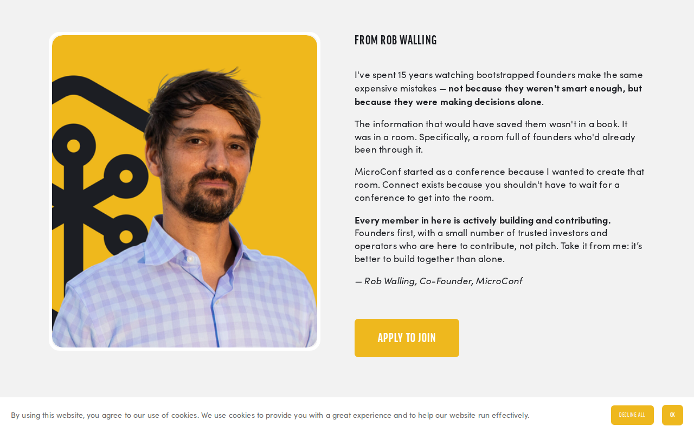
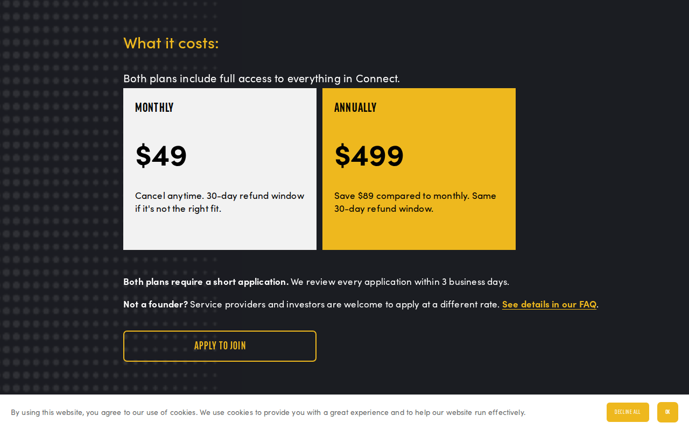

Competitor comparison
Three real sites that already help indie software founders. We compare who they serve, what they offer, how they look and how they persuade visitors to act.
How these were chosen. Analysis All three target independent or bootstrapped founders, which overlaps with our audience. An AI assistant suggested them and Timothy confirmed them [TODO: Timothy confirm]. See AI use.
Method. Starter Story and MicroConf pages were captured on 2026-11-16 with an automated browser (Playwright). Quotes were copied from the page text. Indie Hackers blocked the automated browser with a Cloudflare security check, so it must be captured by hand. [TODO: Timothy screenshot Indie Hackers]
On small screens, scroll the tables sideways.
| Criteria | Starter Story | MicroConf | Indie Hackers |
|---|---|---|---|
| Website | starterstory.com Evidence S1, S2 | microconf.com Evidence S3, S4 | indiehackers.com [VERIFY: open the source] S5 |
| Audience | Evidence People looking for business ideas that make money. The header says “by HubSpot Media,” and the filters include “Micro-SaaS,” “No-code” and “Solopreneur.” | Evidence Bootstrapped and self-funded B2B SaaS founders. The Connect page also names “aspiring founders with a real plan” who are “employed but seriously working toward launching.” | [VERIFY: open the source] Third-party listings describe indie founders building profitable online businesses without venture capital. [TODO: confirm on the site] |
| Content | Evidence A searchable database of “4,082+ real, revenue-generating projects” with revenue, start cost, time to start and tools used. Paid membership, community and an “Academy” are mentioned on the join page. | Evidence Conferences, a private community (MicroConf Connect), mastermind matching, a talk library and a knowledge base of videos, podcasts and guides. | [VERIFY: open the source] Community forum and founder interviews/stories. [TODO: confirm] |
| Design | Evidence Bold purple hero, bright green buttons, large sans-serif headline, a “live” data table and rows of founder photos. | Evidence White and dark sections with a gold accent, condensed uppercase buttons, real conference photos, three clear calls to action on the homepage. | [TODO: describe after screenshot] |
| Brand character | Analysis Energetic and money-forward (“Build a business that changes your life, forever.”). Feels like a startup product. | Analysis Experienced insider and peer group: warm humor (“crew of misfits”) plus seriousness about vetting. | [TODO: describe] |
| How they persuade | Analysis Mostly social proof (counts, testimonials) and reciprocity (free database for an email). See the Cialdini breakdown. | Analysis Mostly authority (founder letter), unity (“stop building alone”) and exclusivity (application, vetting). | [TODO: fill in after screenshots] |
| Strengths | Analysis Concrete, searchable examples. The free entry point lowers the barrier. | Analysis Clear focus, long track record claimed (“more than a decade”), clear pricing and refund window. | [TODO: fill in] |
| Weaknesses | Analysis Revenue numbers are prominent, but we did not see on these pages how they are verified. The hype tone may not suit cautious beginners. The email form says the address is shared with HubSpot. | Analysis Focused on B2B SaaS, so apps and digital products are mostly outside its scope. Assumption $49/month plus an application may be a barrier for students. | [TODO: fill in] |
How they persuade: Cialdini's seven principles
Robert Cialdini's book Influence describes principles that make people say yes: reciprocity, commitment and consistency, social proof, authority, liking, scarcity and unity. Unity was added in the newer edition [VERIFY: open the source] (S6). Below, each quote is Evidence copied from the page; the principle we assigned it to is Analysis our interpretation.
| Principle | Starter Story | MicroConf | Indie Hackers |
|---|---|---|---|
| Reciprocity give first |
“Search 4,082+ real, revenue-generating projects … Updated live. Free.” The free database is offered in exchange for an email. (S1) | “We’ve got thousands of hours of videos, podcasts, guides and more.” (S3) | [TODO] |
| Commitment & consistency small yes first |
Analysis Free email signup comes before the paid membership on /join. (S1, S2) | “Takes ~5 min.” for the application, then a 4-step process. The “Sound familiar?” list invites readers to agree with each statement. (S4) | [TODO] |
| Social proof others do it |
“12,568 builders building” and a wall of about 25 photo testimonials, for example “I made over $5,000 from my $100 Starter Story membership in a week!” (S2) | “We’ve brought together the world’s largest community of bootstrapped B2B SaaS Founders” (S3). Testimonials list revenue, for example “Marcus T. … $18k MRR,” using first name and last initial only (S4). | [TODO] |
| Authority experts say so |
“by HubSpot Media” in the header and “The widest database of real founder data.” (S1) | “I’ve spent 15 years watching bootstrapped founders make the same expensive mistakes” from co-founder Rob Walling, plus “Ask Rob Anything” sessions. (S4) | [TODO] |
| Liking people like us |
Smiling founder photos and a casual tone: “I did more in 35 days than in 35 years of my life prior to joining. LFG!!!” (S2) | Humor: “It’s 3:00 AM, why are you still typing gibberish into that black box on your computer?” (S3) | [TODO] |
| Scarcity rare or exclusive |
Testimonials: “You can't find this information anywhere else.” and “You can’t afford not to join.” (S2). Note: these come from customers, not from Starter Story itself. | “MicroConf Connect is a vetted private community,” “Both plans require a short application” (S4), and “Join our waitlist for our next matching session in Fall 2026.” (S3) | [TODO] |
| Unity we are one group |
“The place where builders learn, experiment, and build $1M businesses alongside each other.” (S2) | “MicroConf is where bootstrapped and self-funded founders unite” and “find your crew of misfits” (S3). “Stop building alone.” (S4) | [TODO] |
Analysis Neither site we captured used countdown timers or “only 3 spots left” messages. Their scarcity is exclusivity: an application, vetting, or information “you can't find anywhere else.”
Screenshots
Captured 2026-11-16 at 1280px width. Select an image to see it full size. The cookie banner at the bottom of the MicroConf images was part of the page when captured.
Starter Story




MicroConf














Indie Hackers
[TODO: Add a homepage screenshot as images/competitors/ih-home.png]
[TODO: Add a sign-up or join page screenshot as images/competitors/ih-join.png]